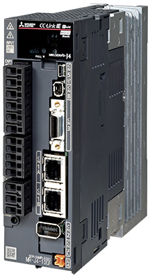
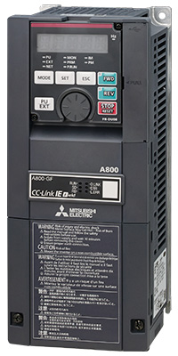

Network-related products |
Programmable Controllers MELSEC
CC-Link IE Line Up


Drive Products
AC Servo MELSERVO-J4 Series
CC-Link IE Field Network compatible servo amplifier
- CC-Link IE Field Network function embedded
- With a master module, the servo amplifier can perform positioning operations just as easy as I/O operations, by using the point table method (positioning operations are performed based on the point table No. and start signal, without using a positioning module)
- Combined with the Simple Motion module, the servo amplifier can perform synchronous and interpolation control, in addition to speed and torque control

| Model*1 | Voltage class | Rated output | Fully closed loop control | Compatible servo motor | ||
|---|---|---|---|---|---|---|
| Rotary | Linear | Direct drive | ||||
| MR-J4-□GF | 200 V | 0.1…22 kW | ● | ● | ● | ● |
| MR-J4-□GF4 | 400 V | 0.6…22 kW | ● | ● | ● | - |
| MR-J4-□GF1 | 100 V | 0.1…0.4 kW | ● | ● | ● | ● |
| MR-J4-□GF-RJ | 200 V | 0.1…22 kW | ● | ● | ● | ● |
| MR-J4-□GF4-RJ | 400 V | 0.6…22 kW | ● | ● | ● | - |
| MR-J4-□GF1-RJ | 100 V | 0.1…0.4 kW | ● | ● | ● | ● |
- *1.“□” in the model name denotes rated output. For further details about model name, please refer to the “MELSERVO-J4 catalog (L(NA)03058ENG)”.
Inverter FREQROL-A800 Series
CC-Link IE Field Network compatible inverter
- CC-Link IE Field Network function embedded*2
- High-speed communication of CC-Link IE Field Network realizes various inverter operations to be monitored at a fast rate (multiple monitoring and parameter reading/writing can also be executed simultaneously improving maintainability)
- Seamless network environment enables monitoring and setup of inverters from the IT system

| Model*3 | Voltage class | Capacity | Structure/functionality |
|---|---|---|---|
| FR-A820-□K-GF | 200 V | 0.4…90 kW | Standard model |
| FR-A840-□K-GF | 400 V | 0.4…280 kW | Standard model |
| FR-A842-□K-GF | 400 V | 315…500 kW | Separated converter type |
- *2.The CC-Link IE Field Network communication option (FR-A8NCE) is also available (applicable models: FR-A800 and FR-F800 Series inverters). For details, please refer to the “Inverter option catalog (L(NA)06054ENG)”.
- *3.“□” in the model name denotes rated output. For further details about model name, please refer to the “FR-A800 catalog (L(NA)06075ENG)”.